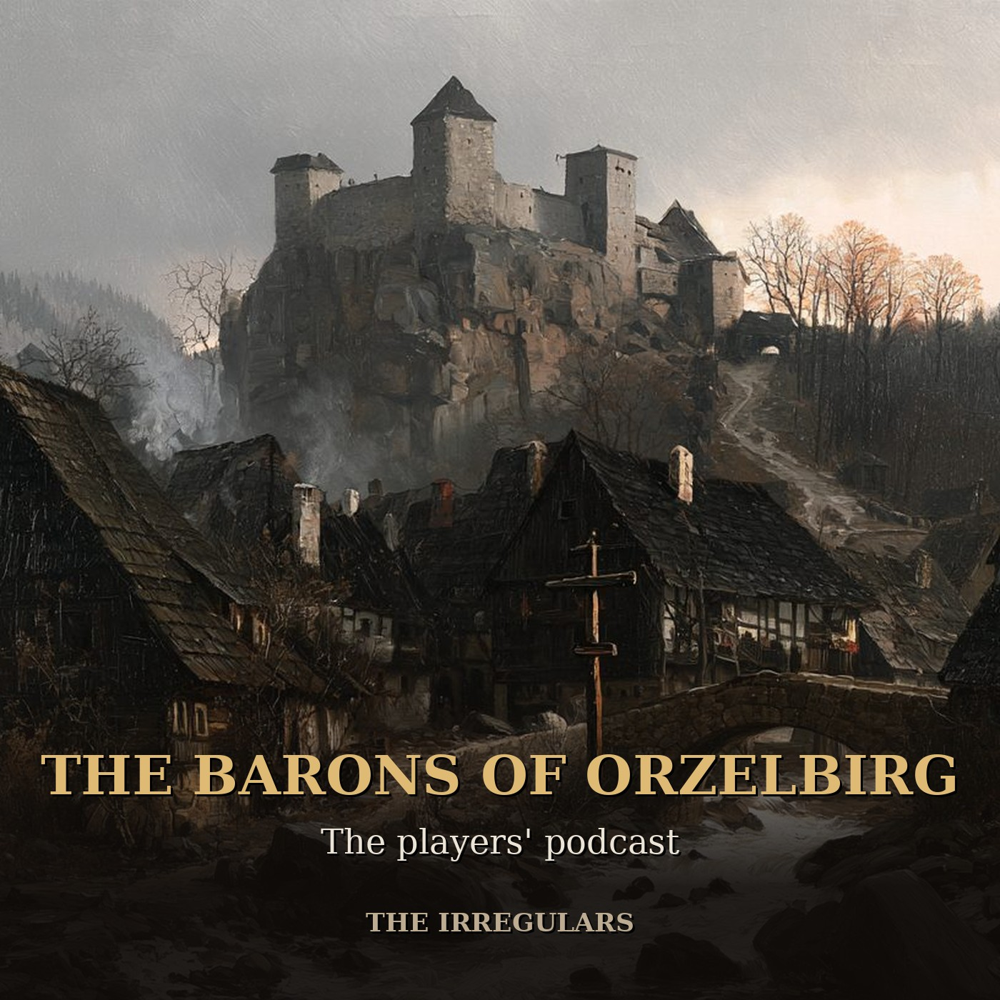

The players' podcast for the Irregulars: the barony's rules, lore and people, some of it read by the court itself.
Subscribe: in your podcast app, choose "add by URL" (Pocket Casts, Overcast, Apple Podcasts: Library → Follow a Show by URL) and paste https://alevensailor.github.io/orzelbirg-podcast/feed.xml
Read by Emeryk Lis, Clerk of the Court · 10 min
The Clerk reads the Book of Orzelbirg from its first page: the road that brought you here, the First Court, and the night on the Pale Road.
The rules, plainly · 8 min
What's on the Barony's Sheet: the barony's skills, defenses and tracks, and the table's rulings.
The rules, plainly · 8 min
How the barony gets things done between games: foundations, the five moves, and calling the barony to arms.
Told by Stefan Borislav, Steward of Orzelbirg · 13 min
The Steward walks you round the barony and the castle, and reads you the accounts.
The rules, plainly · 7 min
Exposure and Honor: how Morgau squeezes a barony that defies it, and what the Crown and the Slahta say of you.
Told by Sister Aniela Radosz, counsel to the court · 17 min
Sister Aniela reads the Statutes of Krakova, with the notes she keeps in the margins.
The rules, plainly · 10 min
The offices of the court, and how negotiation works.
Read by Emeryk Lis, Clerk of the Court · 10 min
The Clerk reads the roll: who's who in Orzelbirg, how to say their names, and the calendar.
The road that led to Orzelbirg · 10 min
The whole Empire of the Ghouls campaign in one place, as your table played it.